Models¶
Drude Model¶
Drude models models the electromagnetic properties of conductors. In this simple model, electromagnetic interaction with the electromagnetic waves comes from the free charges governed by this equation of motion.

where  is the damping term like the one in Brownian motion. In fact this is a Brownian motion like equation since 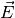 is periodic and averages to 0 in a simple case except that this external electric force is not random.
is the damping term like the one in Brownian motion. In fact this is a Brownian motion like equation since 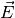 is periodic and averages to 0 in a simple case except that this external electric force is not random.
Math
Now consider the solution to this equation which is simple using Green’s function,

The first term is the damping contribution to the velocity of the charges and the second term is the contribution of electric field.
As a practice, we can show that the ratio of two contributions is

It is obvious that in the limit  , and after a long time this ratio becomes 0 which actually comes from the fact that
, and after a long time this ratio becomes 0 which actually comes from the fact that  is very large.
is very large.
This means that in a long run, the damping always takes over the system if we have a very large frequency. Now the next question is what is the energy contribution of electric field after a long time?

becomes 0 as becomes large enough.
So in a high frequency limit, the system take no energy from electric field.
Note that this result is complex. Explain why is a velocity is complex.
In this model, what to calculate is the electromagnetic response of the material like reflection ration etc.
Maxwell Equations¶
Maxwell Equations
nablacdot vec D &= 4pi rho ,\ nablacdot vec B & = 0 ,\ nabla times vec E & = -frac{1}{c} partial_t vec B ,\ nabla times vec H & = frac{1}{c}partial_t vec D + frac{4pi}{c} vec j .
In Drude model, for each mode 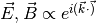, I can replace  with
with  and
and  with 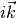. With the help of this, the Maxwell’s equation becomes
with 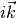. With the help of this, the Maxwell’s equation becomes
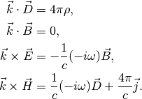
Current Density¶
The current density is

Meanwhile, the Drude model tells us the velocity is governed by

where  is a damping term.
is a damping term.
Damping Term
This damping term can also be interpreted as the mean free time or some kind of probability.
Plugin the current density we could find the equation for current density.
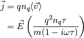
Ohm’s law tells us that

Now we can have a phenomelogical conductivity from Drude model,

Maxwell’s Equation in Neutral Matter¶
Pluging in the current density we calculated previously, the Maxwell’s equation becomes

Comparing with the equations in matter without free charge, where the transverse wave satisfies
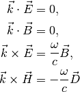
we can find the expression for permitivity,

since  . In the result I defined
. In the result I defined
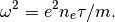
The next quantity is to calculate the refractive index with .
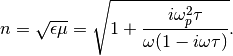
In the limit of , refractive index becomes

Dispersion Relation¶

gives us the dispersion relation. However, we need to make a choice that the field need to be broken into parts that is perpendicular and parallel to wave vector. For the transverse wave, we could write down
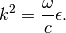
Lorentz Model¶
Drude model only considers the damping part of conducting charges. Lorentz model, considers the actually polarization inside medium, using a simple but efficient model.
In models about matter response to electromagnetic waves, we have to get the permitivity out of it and furthure calculate the refractive index.
Suppose we already know how to write down polarization,

which means the polarization is caused by a lot of small dipoles. At this point we are not binded to the calculation of the detailed expression of these small dipoles. Instead we are going to calculate the permitivity first then come back to have a look at the details.
In statics we know,

To find  we need to establish the relation between 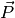 and which is equivalently setting up the relation between 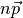 and .
we need to establish the relation between 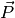 and which is equivalently setting up the relation between 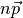 and .
Here we introduce Lorentz model. In this context, we consider the case that equation of motion for the charges are governed by

Solve the equation of motion we have the relation between  and thus we can write down
and thus we can write down
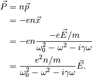
Imediately, we have the permitivity

where we used the definition of plasma frequency

Limits¶
We have got three important parameters or arguments in Lorentz model,  , ,
, ,  and on overall
and on overall  . One should notice that in normal matter we would see 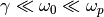.
. One should notice that in normal matter we would see 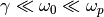.
Three limits can be considered,
- low frequency, is very small like
 ;
; - critical,
 where we have only 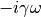 appears in denominator;
where we have only 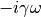 appears in denominator; - intermediate, 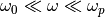;
- very high frequency,
 .
.
The interesting thing is that in situation 3, we get back to Drude model.